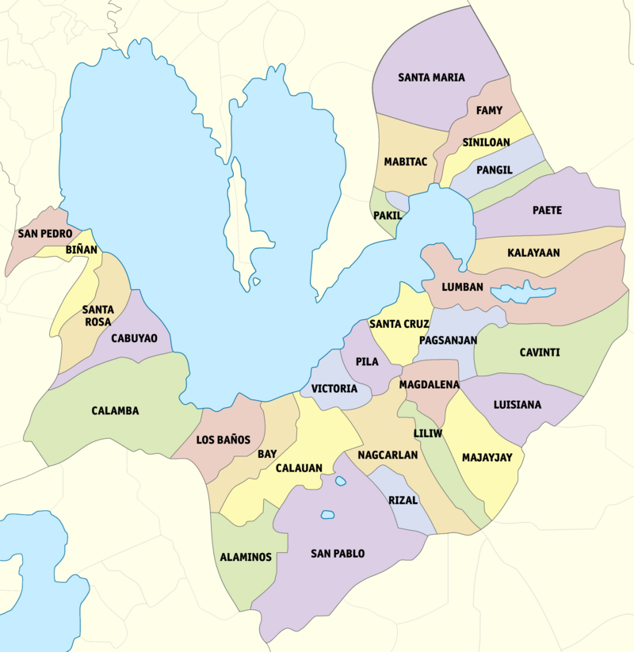

History
The Province of Laguna, which was formerly called La Laguna and La Provincia de la Laguna de Bay, was named after Laguna de Bay, the body of water that forms its northern boundary. Laguna de Bay, in turn, was named after the town of Bay (Laguna de Bay is Spanish which means "Lake of Bay"), the first provincial capital.

Geography
Laguna covers a total area of 1,917.85 square kilometres (740.49 sq mi) occupying the north‑central section of the CALABARZON region in Luzon. The province is situated southeast of Metro Manila, south of Rizal, west of Quezon, north of Batangas and east of Cavite. Laguna lies on the southern shores of Laguna de Bay, the largest lake in the country. On the southern border of the province are Mount Makiling and Mount Banahaw, both are long dormant volcanoes, but still sources of geothermal energy. Mount Makiling is popular for the numerous hot spring resorts that are found on its slopes. Pagsanjan Falls, is a popular waterfall that tumbles down a deep gorge in the hills. The eastern portion of Laguna straddles the southernmost portions of the Sierra Madre mountain range.
Demographics
Population increased at the rate of 3.11 percent annually Based on the 2010 Census of Population and Housing (CPH), the province of Laguna posted a total population of 2,669,847 persons as of May 1, 2010. This is larger by 703,975 persons compared to its total population of 1,965,872 persons counted in the 2000 CPH. The increase in the population count from 2000 to 2010 translated to an average annual population growth rate (PGR) of 3.11 percent. This is lower than the 3.67 percent annual PGR of the province between the census years 1990 and 2000. If the average annual PGR recorded at 3.11 percent during the period 2000 to 2010 continues, the population of Laguna would double in 22 years. Fifty years ago, the population of Laguna was only 472,064 persons. The population size is more than five times the population of the province in the 2010 CPH. City of Calamba was the most populous Among the four cities and 24 municipalities comprising the province of Laguna, the City of Calamba was the most populous with a population size making up 14.6 percent of the total provincial population. The municipality of San Pedro was second with 11.0 percent share, followed by the City of Sta. Rosa (10.7 percent) and City of Biñan (10.6 percent). The City of San Pablo and the municipality of Cabuyao each had 9.3 percent share each while the municipality of Santa Cruz, the provincial capital, had a share of 4.2 percent. The rest of the municipalities contributed less than 4.0 percent each. The least populated area was the municipality of Famy with 0.6 percent share to the total population of the province. It was also the least populated area in 2000.
Economy
In terms of share to the national GDP, all 82 provinces had combined share of 56.1 percent to the national GDP in 2022. Laguna accounted for the largest share among the 82 provinces at 5.0 percent.The PhP 2.94 trillion value of Gross Domestic Product (GDP) of the region in 2022, Laguna had the biggest share of 33.7 percent.
Tourism
Our province is a popular tourist destination that offers a wide range of activities and attractions, including...
Attractions
Some of the top attractions in our province include...

Schools and Universities
The University of the Philippines Los Baños (UP Los Baños) is a research university located in the towns of Los Baños in the province of Laguna. It is one of the eight constituent universities of the University of the Philippines System. It traces its roots to the University of Philippines College of Agriculture, which was founded in 1909 by the American colonial government. The university has played an influential role in Asian agriculture and biotechnology and hosts a number of local and international research centers, including the International Rice Research Institute (IRRI), ASEAN Center for Biodiversity, World Agroforestry Centre, and the Southeast Asian Regional Center for Graduate Study and Research in Agriculture (SEARCA). In addition to academic excellence, the university encourages students to link the conceptual and theoretical principles of their studies to the world of everyday practice. UP Los Baños joined EPIC-N in 2021. In 2021-2022, the university used the EPIC Model to engage graduate students from the Communication Approaches in Development Programs with the City of Calamba on a project entitled “Enhancing Disaster Preparedness of Lakeshore Communities in Calamba City, Laguna Province”